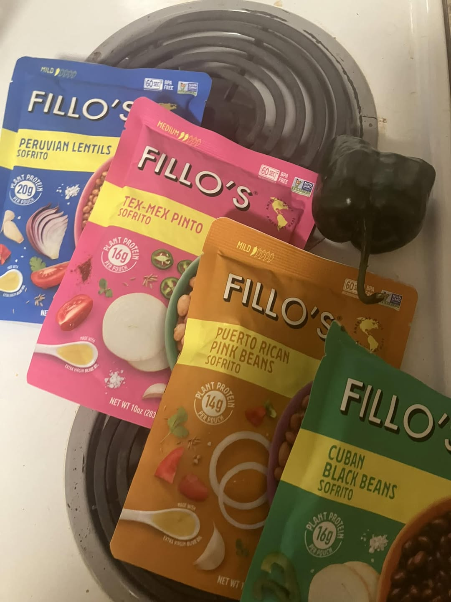

It’s really hard to find an example of any long-lived population that did not regularly consume some form of legumes.
As far as I can tell, no such example exists.
Louis observes that every Blue Zone population eats beans regularly. The shared note recommends at least half a cup of cooked beans daily.
It’s really hard to find an example of any long-lived population that did not regularly consume some form of legumes.
As far as I can tell, no such example exists.
Aim to eat at least a half cup of cooked beans daily! Beans reign supreme in blue zones. They’re the cornerstone of every longevity diet in the world: black beans in Nicoya; lentils, garbanzo, and white beans in the Mediterranean; and soybeans in Okinawa. People in the blue zones eat at least four times as many beans as Americans do on average.
The fact is, beans are the consummate superfood. On average, they are made up of 21% protein, 77% complex carbohydrates (the kind that deliver a slow and steady energy rather than the spike you get from refined carbohydrates like white flour), and only a few percent fat. They are also an excellent source of fiber. They’re cheap and versatile, come in a variety of textures, and are packed with more nutrients per gram than any other food on Earth. Beans are a meal staple in all five of the blue zones—with a dietary average of at least a half-cup per day, which provides most of the vitamins and minerals you need. And because beans are so hearty and satisfying, they’ll likely push less healthy foods out of your diet.
🫘 Comment below to tell us how you make beans tasty! 🫘
#bluezones #bluezoneslife #livebetterlonger #longevity #beans #bluezonesdiet
A shared Blue Zones description of the purple sweet potato (imo) that is an Okinawan staple. It is described as high in complex carbs with a low glycemic load that spikes blood sugar less than white potato, and rich in the antioxidant sporamin. The poster calls it healthier than white potatoes.

Louis cites the classic Sardinian diet as a real-world example backing up trial evidence for the traditional Mediterranean diet. Blue Zones reports Sardinia has 10 times the US rate of centenarians.
Louis notes this is the fifth large cohort linking eggs to lower dementia risk, but the same analysis showed nuts and beans gave equally large protection. Swap eggs for red and processed meat, not for nuts or beans. The shared post says roughly 12 almonds or a third cup of lentils matched the egg effect, undermining a choline-only explanation.

Louis says he aims for a cup of beans a day, in line with Blue Zone diets, and describes simple-ingredient pre-cooked bean packets (olive oil as only fat, about $2.75 each) he found at Walmart. It is a personal product tip with no cited research.

Louis summarizes Keys' 1975 book How to Eat Well and Stay Well the Mediterranean Way, noting he finds little Keys got wrong. The diet copies what people traditionally ate in Mediterranean regions with long life expectancy and low heart disease: plants, olive oil, limited red meat, fish, legumes and whole grains.

Louis shares results from the Harvard Nurses' Health Study published in JAMA Network Open. Among over 38,000 women followed 12 years around menopause, a low-insulinemic dietary pattern and the Planetary Health Diet were most associated with less weight gain and lower obesity risk.